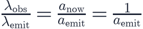
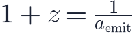
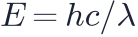

In this lesson you will learn
|
Stretching light
Think of a light wave as crests painted on the expanding grid. While the light travels from a distant galaxy to us, the grid keeps stretching, and the distance between neighbouring crests (the wavelength) stretches by exactly the same factor as all other distances.
If light was emitted with wavelength when the scale
factor was , it arrives today ( ) with
) with

Using the definition of redshift from lesson L0.3, , we obtain the key relation of cosmological redshift:

Redshift measures size A redshift tells us directly how much the universe has expanded since the
light was emitted. At |
| Redshift z | Scale factor a | Universe size relative to today |
|---|---|---|
| 0 | 1 | today |
| 0.5 | 0.67 | two thirds |
| 1 | 0.5 | half |
| 3 | 0.25 | a quarter |
| 10 | 0.091 | about one eleventh |
| 1100 | 0.00091 | about one thousandth |
Try it: Spectrum & Redshift Simulator Choose "Cosmic expansion" and read how big the universe was when the light left the galaxy. |
Not a Doppler shift
A Doppler shift comes from the relative motion of source and observer at the moments of emission and reception. Cosmological redshift is different: it accumulates during the journey, as space expands.
Some consequences:
- Cosmological redshift depends only on the ratio of scale factors, not on how the expansion happened in between.
- There is no upper limit:
 grows without bound as .
Galaxies have been observed beyond .
grows without bound as .
Galaxies have been observed beyond . - Applying the special-relativistic Doppler formula to a high-redshift galaxy
gives a "velocity" below
 , but that number has no clear physical meaning.
, but that number has no clear physical meaning.
Common mistake It is wrong to conclude that a galaxy at moves at 3 times the speed of light, or at 88% of it as the relativistic Doppler formula would suggest. Its recession velocity depends on its distance and the expansion history, which we calculate with the Friedmann equations. |
For small redshifts () the two pictures agree:  with
with
 . That is why Hubble could use the Doppler formula for nearby galaxies.
. That is why Hubble could use the Doppler formula for nearby galaxies.
Time dilation and energy
Expansion stretches everything about the light, not just its wavelength:
- Time intervals are stretched too. A supernova at
 appears to fade
twice as slowly as an identical nearby one; this has been observed.
appears to fade
twice as slowly as an identical nearby one; this has been observed. - The energy of each photon

decreases by the factor .
.
Where does the energy go? In an expanding universe, energy is not globally conserved in the simple way it is in a laboratory, because the background spacetime changes with time. This is a subtle but well-understood feature of general relativity. |
Redshift as a clock
Because redshift maps onto the scale factor, and the scale factor changes with time, astronomers use redshift as a clock: "at redshift 6" means "when the universe was 1/7 of its current size", which for our universe was about 900 million years after the Big Bang.
Remember this
|